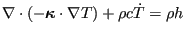
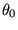
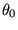
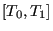
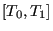

Next: Acoustics Up: Types of analysis Previous: Direct integration dynamic analysis Contents
In a heat transfer analysis, triggered by the *HEAT TRANSFER procedure card, the temperature is the independent degree of freedom. In essence, the energy equation is solved subject to temperature and flux boundary conditions ([19]). For steady-state calculations it leads to a Laplace-type equation.
The governing equation for heat transfer reads
|  | (339) |
where
 contains the conduction coefficients,
contains the conduction coefficients,  is the
density,
is the
density,  the heat generation per unit of mass and is the specific
heat.
the heat generation per unit of mass and is the specific
heat.
The temperature can be defined using the *BOUNDARY card using degree of freedom 11. Flux type boundary conditions can consist of any combination of the following:
| (340) |
where  is the a flux normal to the surface,
is the a flux normal to the surface,  is the film coefficient,
is the film coefficient,  is
the body temperature and
is
the body temperature and  is the environment temperature (also called
sink temperature). CalculiX can also be used for forced convection
calculations, in which the sink temperature is an unknown too. This applied to
all kinds of surfaces cooled by fluids or gases.
is the environment temperature (also called
sink temperature). CalculiX can also be used for forced convection
calculations, in which the sink temperature is an unknown too. This applied to
all kinds of surfaces cooled by fluids or gases.
| (341) |
where  is a flux normal to the surface,
is a flux normal to the surface,  is the emissivity,
is the emissivity,
 is the absolute body temperature (Kelvin) and  is the
absolute environment temperature (also called sink temperature). The
emissivity takes values between 0 and 1. A zero value applied to a body with
no absorption nor emission and 100 reflection. A value of 1 applies to a
black body. The radiation is assumed to be diffuse (independent of the
direction of emission) and gray (independent of the emitted wave
length). CalculiX can also be used for cavity radiation, simulating the
radiation interaction of several surfaces. In that case, the viewfactors are
calculated, see also [35] for the fundamentals of heat transfer
and [6] for the calculation of viewfactors.
is the absolute body temperature (Kelvin) and  is the
absolute environment temperature (also called sink temperature). The
emissivity takes values between 0 and 1. A zero value applied to a body with
no absorption nor emission and 100 reflection. A value of 1 applies to a
black body. The radiation is assumed to be diffuse (independent of the
direction of emission) and gray (independent of the emitted wave
length). CalculiX can also be used for cavity radiation, simulating the
radiation interaction of several surfaces. In that case, the viewfactors are
calculated, see also [35] for the fundamentals of heat transfer
and [6] for the calculation of viewfactors.
The calculation of viewfactors involves the solution of a four-fold integral. By using analytical formulas derived by Lambert this integral can be reduced to a two-fold integral. This is applied in CalculiX right now: the interacting surfaces are triangulated and the viewfactor between two triangles is calculated by taking a one-point integration for the base triangle (in the center of gravity) and the analytical formula for the integration over the other triangles covering a hemisphere about the base triangle. One can switch to a more accurate integration over the base triangle by increasing the variable “factor” in subroutine radmatrix, look at the comments in that subroutine. This, however, will increase the computational time.
For a heat transfer analysis the conductivity coefficients of the material are needed (using the *CONDUCTIVITY card) and for transient calculations the heat capacity (using the *SPECIFIC HEAT card). Furthermore, for radiation boundary conditions the *PHYSICAL CONSTANTS card is needed, specifying absolute zero in the user's temperature scale and the Boltzmann constant.
Notice that a phase transition can be modeled by a local sharp maximum of the
specific heat. The energy  per unit of mass needed to complete the phase
transition satisfies
per unit of mass needed to complete the phase
transition satisfies
 |
(342) |
where  is the specific heat and  is the temperature interval
within which the phase transition takes place.
is the specific heat and  is the temperature interval
within which the phase transition takes place.